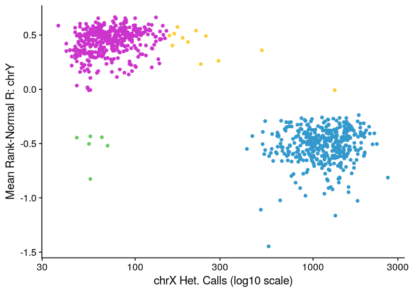

Last updated: 2021-12-07
Checks: 7 0
Knit directory: rta/
This reproducible R Markdown analysis was created with workflowr (version 1.6.2). The Checks tab describes the reproducibility checks that were applied when the results were created. The Past versions tab lists the development history.
Great! Since the R Markdown file has been committed to the Git repository, you know the exact version of the code that produced these results.
Great job! The global environment was empty. Objects defined in the global environment can affect the analysis in your R Markdown file in unknown ways. For reproduciblity it’s best to always run the code in an empty environment.
The command set.seed(20200501) was run prior to running the code in the R Markdown file. Setting a seed ensures that any results that rely on randomness, e.g. subsampling or permutations, are reproducible.
Great job! Recording the operating system, R version, and package versions is critical for reproducibility.
Nice! There were no cached chunks for this analysis, so you can be confident that you successfully produced the results during this run.
Great job! Using relative paths to the files within your workflowr project makes it easier to run your code on other machines.
Great! You are using Git for version control. Tracking code development and connecting the code version to the results is critical for reproducibility.
The results in this page were generated with repository version 868cd0f. See the Past versions tab to see a history of the changes made to the R Markdown and HTML files.
Note that you need to be careful to ensure that all relevant files for the analysis have been committed to Git prior to generating the results (you can use wflow_publish or wflow_git_commit). workflowr only checks the R Markdown file, but you know if there are other scripts or data files that it depends on. Below is the status of the Git repository when the results were generated:
Ignored files:
Ignored: .Rhistory
Ignored: .Rproj.user/
Ignored: code/.Rapp.history
Ignored: data/.Rhistory
Ignored: data/RDS/
Ignored: run/
Untracked files:
Untracked: LICENSE
Untracked: Untitled.R
Untracked: analysis/17_mapping_interpretation_old.Rmd
Untracked: analysis/20_predict_acquisition_from_novelty.Rmd
Untracked: analysis/21_DO_elasticnet_correlation.Rmd
Untracked: analysis/temp.txt
Untracked: code/DO_eQTL_perms.R
Untracked: code/DO_eQTL_score_calc.R
Untracked: code/STAR_RSEM_416.sh
Untracked: code/eQTL_plotting_DO_striatum_416.R
Untracked: code/ggplot_pub_themes.R
Untracked: data/20_elastic_mv_results.csv
Untracked: data/20_elasticnet_predictions.RDS
Untracked: data/DO_416_DGEList.RDS
Untracked: data/DO_416_DGEList_unfiltered (michael.saul@jax.org 2).RDS
Untracked: data/DO_416_DGEList_unfiltered (michael.saul@jax.org 3).RDS
Untracked: data/DO_416_DGEList_unfiltered (michael.saul@jax.org 4).RDS
Untracked: data/DO_416_DGEList_unfiltered (michael.saul@jax.org).RDS
Untracked: data/DO_416_DGEList_unfiltered.RDS
Untracked: data/DO_416_ERCC_DGEList.RDS
Untracked: data/DO_416_ERCC_cpm.RDS
Untracked: data/DO_416_normrt.RDS
Untracked: data/DO_416_pheno.RDS
Untracked: data/DO_416_pheno_allgenes.RDS
Untracked: data/DO_416_voom (michael.saul@jax.org).RDS
Untracked: data/DO_416_voom.RDS
Untracked: data/DO_416_voom_allgenes (michael.saul@jax.org 2).RDS
Untracked: data/DO_416_voom_allgenes (michael.saul@jax.org).RDS
Untracked: data/DO_416_voom_allgenes.RDS
Untracked: data/DO_416_voom_cpresiduals.RDS
Untracked: data/DO_AQ_active_CoV_toptable_annotated.RDS
Untracked: data/DO_AQ_lever_ratio_toptable_annotated.RDS
Untracked: data/DO_AQ_mean_inf_toptable_annotated.RDS
Untracked: data/DO_AQ_rate_toptable_annotated.RDS
Untracked: data/DO_IVSA_acquisition_cancor_df.RDS
Untracked: data/DO_IVSA_acquisition_logit_df.RDS
Untracked: data/DO_IVSA_acquisition_logit_glm.RDS
Untracked: data/DO_IVSA_all_cancor_df.RDS
Untracked: data/DO_IVSA_data.RDS
Untracked: data/DO_IVSA_novelty_cancor_ALL.RDS
Untracked: data/DO_IVSA_novelty_cancor_AQ.RDS
Untracked: data/DO_IVSA_novelty_data.RDS
Untracked: data/DO_IVSA_prediction_ACQUISITION_logit.RDS
Untracked: data/DO_IVSA_prediction_ACQUISITION_logit_2021-01-04.RDS
Untracked: data/DO_IVSA_prediction_ALL_cancor.RDS
Untracked: data/DO_IVSA_prediction_ALL_cancor_2021-01-04.RDS
Untracked: data/DO_IVSA_prediction_ALL_cancor_old.RDS
Untracked: data/DO_IVSA_prediction_AQ_cancor.RDS
Untracked: data/DO_IVSA_prediction_AQ_cancor_2021-01-04.RDS
Untracked: data/DO_IVSA_prediction_a1_ACQUISITION_logit.RDS
Untracked: data/DO_IVSA_prediction_a2_AQ_cancor.RDS
Untracked: data/DO_IVSA_prediction_a3_ALL_cancor.RDS
Untracked: data/DO_IVSA_prediction_a4_male_ALL_cancor.RDS
Untracked: data/DO_IVSA_prediction_a5_female_ALL_cancor.RDS
Untracked: data/DO_IVSA_raw_data.RDS
Untracked: data/DO_IVSA_transformed_data.RDS
Untracked: data/DO_LIMS_data.RDS
Untracked: data/DO_RTG_a1_new.qtl.RData
Untracked: data/DO_RTG_a1_new_1000x.qtlpermu.RData
Untracked: data/DO_RTG_a1_new_mapping_1000x.RData
Untracked: data/DO_RTG_a2_new.qtl.RData
Untracked: data/DO_RTG_a2_new_1000x.qtlpermu.RData
Untracked: data/DO_RTG_a2_new_mapping_1000x.RData
Untracked: data/DO_RTG_a3_new.qtl.RData
Untracked: data/DO_RTG_a3_new_1000x.qtlpermu.RData
Untracked: data/DO_RTG_a3_new_mapping_1000x_01.RData
Untracked: data/DO_RTG_a3_new_mapping_1000x_02.RData
Untracked: data/DO_RTG_a4_new.qtl.RData
Untracked: data/DO_RTG_a5_new.qtl.RData
Untracked: data/DO_RTG_elasticnet_new.qtl.RData
Untracked: data/DO_RTG_elasticnet_new_mapping_1000x.RData
Untracked: data/DO_RTG_project_df_for_mapping.RDS
Untracked: data/DO_RTG_project_df_for_mapping_2020-11-06.RDS
Untracked: data/DO_RTG_project_df_for_mapping_a2.RDS
Untracked: data/DO_RTG_project_df_for_mapping_sexspecific.RDS
Untracked: data/DO_demographic_data_df.RDS
Untracked: data/DO_eigengene_significance.RDS
Untracked: data/DO_eigengenes.RDS
Untracked: data/DO_highcor_cpresiduals_datatable.RDS
Untracked: data/DO_holeboard_data_df.RDS
Untracked: data/DO_holeboard_summarized.RDS
Untracked: data/DO_lightdark_data_df.RDS
Untracked: data/DO_mQTL_peaks.RDS
Untracked: data/DO_mQTL_scan1s.RDS
Untracked: data/DO_module_membership.RDS
Untracked: data/DO_novelplace_data_df.RDS
Untracked: data/DO_novelty_data.RDS
Untracked: data/DO_novelty_response_data.RDS
Untracked: data/DO_novelty_response_data_for_RTG.RDS
Untracked: data/DO_novelty_response_data_with_transform.csv
Untracked: data/DO_openfield_data_df.RDS
Untracked: data/DO_paraclique_data.el
Untracked: data/DO_paraclique_eigengenes.RDS
Untracked: data/DO_paracliques.RDS
Untracked: data/DO_paracliques_significance.RDS
Untracked: data/DO_ploidy_calls.RDS
Untracked: data/DO_pmap.RDS
Untracked: data/DO_pvalue_histograms.RData
Untracked: data/DO_rtg_a1_toptable_annotated.RDS
Untracked: data/DO_rtg_a2_toptable_annotated.RDS
Untracked: data/DO_rtg_a3_toptable_annotated.RDS
Untracked: data/DO_rtg_m1_toptable_annotated.RDS
Untracked: data/DO_rtg_m2_toptable_annotated.RDS
Untracked: data/DO_rtg_m3_toptable_annotated.RDS
Untracked: data/DO_str_2016_eQTL.RData
Untracked: data/DO_str_2016_gm4qtl2.zip
Untracked: data/DO_str_2016_gm4qtl2_intensities.fst
Untracked: data/DO_voom_cpresiduals_NArm.RDS
Untracked: data/DO_wgcna.RDS
Untracked: data/IVSA_RTG_a3_blup.pdf
Untracked: data/IVSA_h2_2019-11-18.tsv
Untracked: data/IVSA_metadata_sheet.RDS
Untracked: data/ME16_edges.tsv
Untracked: data/Mus_musculus.GRCm38.94.parsed.RDS
Untracked: data/Paraclique_19_MF_AMIGO.txt
Untracked: data/RTG_QTL_peaks.RDS
Untracked: data/RTG_figure.RDS
Untracked: data/SENS_RTG/
Untracked: data/Tyr2_genotypes.RDS
Untracked: data/Tyr_genotypes.RDS
Untracked: data/blup_chr7_DO_RTG_a3.RDS
Untracked: data/cc_variants/
Untracked: data/chr18_QTL_results.RDS
Untracked: data/chr4_QTL_results.RDS
Untracked: data/cis/
Untracked: data/eQTL_annotated_peaks.RDS
Untracked: data/eQTL_plots.RData
Untracked: data/figures/
Untracked: data/founders_key/
Untracked: data/gigamuga/
Untracked: data/gwas/
Untracked: data/info/
Untracked: data/m2G.a2.RTG.chr4snp.RData
Untracked: data/mapping_from_hao/
Untracked: data/perms/
Untracked: data/qtl2/
Untracked: data/raw/
Untracked: data/resources/
Untracked: data/tads_loops/
Untracked: data/transcripts/
Untracked: data/variants/
Untracked: logs/
Untracked: new_RTG_a3.jpeg
Untracked: output/RTG_out/
Untracked: output/docs_backup_2020-07-30.tar.gz
Untracked: output/elastic_net_out/
Untracked: singularity/
Untracked: tmp/
Untracked: var/
Unstaged changes:
Deleted: .Rprofile
Modified: .gitignore
Modified: README.md
Modified: analysis/17_mapping_interpretation.Rmd
Modified: analysis/_site.yml
Note that any generated files, e.g. HTML, png, CSS, etc., are not included in this status report because it is ok for generated content to have uncommitted changes.
These are the previous versions of the repository in which changes were made to the R Markdown (analysis/06_DO_ploidy_followup_to_expression.Rmd) and HTML (docs/06_DO_ploidy_followup_to_expression.html) files. If you’ve configured a remote Git repository (see ?wflow_git_remote), click on the hyperlinks in the table below to view the files as they were in that past version.
| File | Version | Author | Date | Message |
|---|---|---|---|---|
| Rmd | 868cd0f | Michael C. Saul | 2021-12-07 | Initial commit for Sumner with alteration for ggplot2 |
| html | 2e38c65 | Michael C. Saul | 2020-07-30 | Rolling back to working version. |
| html | 3799d63 | Michael C. Saul | 2020-05-29 | Build site. |
| html | 839900c | Michael C. Saul | 2020-05-04 | Build site. |
| Rmd | ae65e65 | Michael C. Saul | 2020-05-04 | Commit ploidy analysis |
This analysis is performed to follow up X and Y chromosome aneuploidy suggestion from DO striatum expression analysis.
Calling R libraries necessary for this analysis.
# Using the argyle library from the following GitHub repository: andrewparkermorgan/argyle
library("argyle")
Attaching package: 'argyle'The following objects are masked from 'package:stats':
dist, heatmaplibrary("tools")
library("cowplot")
Attaching package: 'cowplot'The following object is masked from 'package:argyle':
theme_nothinglibrary("ggplot2")norm_rank_transform function that can handle NA values.norm_rank_transform = function(x, c = (0)) {
stopifnot(is.numeric(x) & is.vector(x))
x_noNA = which(!is.na(x))
N = length(x_noNA)
x[x_noNA] = qnorm((rank(x[x_noNA], ties.method = "random") - c) / (N - (2 * c) + 1))
return(x)
}# The GigaMUGA consensus file was found at the following location on the JAX filesystem:
# /projects/churchill-lab/resource_data/muga_reference/gigamuga_consensus_alleles.csv
# The file on the server has the following MD5 checksum:
# cfb5e353f959cab0451619a3eaa8a796
cat(ifelse(md5sum("./data/resources/gigamuga_consensus_alleles.csv") == "cfb5e353f959cab0451619a3eaa8a796",
"The md5 checksum of the v38 GigaMUGA consensus allele file MATCHES the Churchill Lab's file.",
"The md5 checksum of the v38 GigaMUGA consensus allele file DOES NOT MATCH the Churchill Lab's file."))The md5 checksum of the v38 GigaMUGA consensus allele file MATCHES the Churchill Lab's file.gigamuga_consensus_alleles = read.table("./data/resources/gigamuga_consensus_alleles.csv",
sep = ",", header = TRUE, stringsAsFactors = FALSE)
load(url("ftp://ftp.jax.org/MUGA/GM_snps.Rdata"))
load(url("http://csbio.unc.edu/MUGA/snps.gigamuga.Rdata"))Refining the GigaMUGA consensus allele file
colnames(gigamuga_consensus_alleles) = c("Marker","ChrB38","PosB38",
"allele_129","allele_AJ","allele_B6","allele_CAST",
"allele_NOD","allele_NZO","allele_PWK","allele_WSB")
gigamuga_allele_cols = grep("^allele", colnames(gigamuga_consensus_alleles))
gigamuga_consensus_alleles$ChrB38 = paste("chr",gigamuga_consensus_alleles$ChrB38,sep="")
gigamuga_informative_alleles = gigamuga_consensus_alleles[which(gigamuga_consensus_alleles$ChrB38 != "chrNA"),]
gigamuga_informative_alleles = gigamuga_informative_alleles[which(rowSums(gigamuga_informative_alleles[,gigamuga_allele_cols] == "N") != 8),]
alleles_129 = gigamuga_informative_alleles[,"allele_129"]
gigamuga_informative_alleles = gigamuga_informative_alleles[which(rowSums(gigamuga_informative_alleles[,gigamuga_allele_cols] == alleles_129) != 8),]
rownames(gigamuga_informative_alleles) = as.character(gigamuga_informative_alleles[,"Marker"])argyle# Using input file from Vivek downloaded off of cluster.
gigamuga_input = read.table(file = "./data/gigamuga/gigamuga_input_20181120.txt",
sep = "\t", stringsAsFactors = FALSE, header = TRUE)
# Changing directory IDs to local IDs.
gigamuga_input$dir = gsub("^/fastscratch/vmp/csna/",
"./data/gigamuga/",
gigamuga_input$dir)
gigamuga_input$id = gsub("^./data/gigamuga/",
"",
gigamuga_input$dir)
gigamuga_input$id = gsub("/$",
"",
gigamuga_input$id)
# Looping through genotype files to get intensities
for (i in 1:nrow(gigamuga_input)) {
geno_i = read.beadstudio(prefix = gigamuga_input[i,"prefix"],
snps = snps,
in.path = gigamuga_input[i,"dir"])
# This line saves each file.
# saveRDS(geno_i, file = paste("./data/genotypes/geno_",gigamuga_input[i,"id"],".RDS",sep=""))
assign(paste("samples_in_",gigamuga_input[i,"id"],sep=""), colnames(geno_i))
sex_predict_xy_i = predict.sex(geno_i, method = "xy", platform = "giga")
sex_predict_ycalls_i = predict.sex(geno_i, method = "ycalls", platform = "giga")
# Subsetting to only genomic loci
geno_chr_i = geno_i[which(as.character(attr(geno_i,"map")[,"chr"]) %in% paste("chr",c(1:19,"X","Y","M"),sep="")),]
# Getting raw genotypes as a matrix
geno_mat_i = matrix(as.vector(geno_chr_i), ncol = dim(geno_chr_i)[2], nrow = dim(geno_chr_i)[1], byrow = FALSE,
dimnames = list(row.names(geno_chr_i), colnames(geno_chr_i)))
geno_0_i = which(geno_mat_i == "A" | geno_mat_i == "T", arr.ind = TRUE)
geno_1_i = which(geno_mat_i == "H", arr.ind = TRUE)
geno_2_i = which(geno_mat_i == "C" | geno_mat_i == "G", arr.ind = TRUE)
geno_NA_i = which(geno_mat_i == "N" | is.na(geno_mat_i), arr.ind = TRUE)
# Getting raw intensity
intensity_x_i = as.matrix(intensity(geno_chr_i)$x)
intensity_y_i = as.matrix(intensity(geno_chr_i)$y)
# Calculating R for each marker, intensity of x plus intensity of y
R_i = intensity_x_i + intensity_y_i
# Calculating theta for each marker, ((2 / pi) * atan2(y, x))
theta_i = (2 / pi) * atan2(intensity_y_i, intensity_x_i)
# Calculating clusters data frame for tQN calculations
blank_df_i = matrix(rep(NA, times = nrow(geno_mat_i) * ncol(geno_mat_i)),
ncol = ncol(geno_mat_i), nrow = nrow(geno_mat_i), byrow = FALSE,
dimnames = list(row.names(geno_mat_i), colnames(geno_mat_i)))
clusters_df_i = data.frame(row.names = row.names(blank_df_i),
A.R = rep(NA, times = nrow(blank_df_i)),
A.T = rep(NA, times = nrow(blank_df_i)),
B.R = rep(NA, times = nrow(blank_df_i)),
B.T = rep(NA, times = nrow(blank_df_i)),
H.R = rep(NA, times = nrow(blank_df_i)),
H.T = rep(NA, times = nrow(blank_df_i)))
# Getting mean R for A
A.R_i = blank_df_i
A.R_i[geno_0_i] = R_i[geno_0_i]
clusters_df_i$A.R = rowMeans(A.R_i, na.rm = TRUE)
# Getting mean theta for A
A.T_i = blank_df_i
A.T_i[geno_0_i] = theta_i[geno_0_i]
clusters_df_i$A.T = rowMeans(A.T_i, na.rm = TRUE)
# Getting mean R for B
B.R_i = blank_df_i
B.R_i[geno_2_i] = R_i[geno_2_i]
clusters_df_i$B.R = rowMeans(B.R_i, na.rm = TRUE)
# Getting mean theta for B
B.T_i = blank_df_i
B.T_i[geno_2_i] = theta_i[geno_2_i]
clusters_df_i$B.T = rowMeans(B.T_i, na.rm = TRUE)
# Getting mean R for A
H.R_i = blank_df_i
H.R_i[geno_1_i] = R_i[geno_1_i]
clusters_df_i$H.R = rowMeans(H.R_i, na.rm = TRUE)
# Getting mean theta for H
H.T_i = blank_df_i
H.T_i[geno_1_i] = theta_i[geno_1_i]
clusters_df_i$H.T = rowMeans(H.T_i, na.rm = TRUE)
# Calculating tQN
geno_chr_i = tQN(geno_chr_i, clusters = clusters_df_i, xynorm = FALSE, adjust.lrr = FALSE)
geno_lrr_i = attr(geno_chr_i, "lrr")
geno_baf_i = attr(geno_chr_i, "baf")
if (i == 1) {
geno_matrix = geno_mat_i
intensity_x_matrix = intensity_x_i
intensity_y_matrix = intensity_y_i
R_matrix = R_i
theta_matrix = theta_i
lrr_matrix = geno_lrr_i
baf_matrix = geno_baf_i
sex_predict_xy = sex_predict_xy_i
sex_predict_ycalls = sex_predict_ycalls_i
} else {
geno_matrix = cbind(geno_matrix, geno_mat_i)
intensity_x_matrix = cbind(intensity_x_matrix, intensity_x_i)
intensity_y_matrix = cbind(intensity_y_matrix, intensity_y_i)
R_matrix = cbind(R_matrix, R_i)
theta_matrix = cbind(theta_matrix, theta_i)
lrr_matrix = cbind(lrr_matrix, geno_lrr_i)
baf_matrix = cbind(baf_matrix, geno_baf_i)
sex_predict_xy = rbind(sex_predict_xy, sex_predict_xy_i)
sex_predict_ycalls = rbind(sex_predict_ycalls, sex_predict_ycalls_i)
}
rm(list = ls()[grep("_i$",ls())])
}Reading sample manifest from < ./data/gigamuga/Jackson_Lab_Bubier_MURGIGIV01_20171001//Sample_Map.zip > ...Reading genotypes and intensities for 143259 markers x 11 samples from < ./data/gigamuga/Jackson_Lab_Bubier_MURGIGIV01_20171001//Jackson_Lab_Bubier_MURGIGV01_20171001_FinalReport.zip > ...Taking input= as a system command ('unzip -ap './data/gigamuga/Jackson_Lab_Bubier_MURGIGIV01_20171001//Jackson_Lab_Bubier_MURGIGV01_20171001_FinalReport.zip'') and a variable has been used in the expression passed to `input=`. Please use fread(cmd=...). There is a security concern if you are creating an app, and the app could have a malicious user, and the app is not running in a secure environment; e.g. the app is running as root. Please read item 5 in the NEWS file for v1.11.6 for more information and for the option to suppress this message.Constructing genotype matrix...Constructing intensity matrices... 143259 sites x 11 samplesWarning in genotypes(.copy.matrix.noattr(calls), map = attr(calls, "map"), : REF and ALT alleles shouldn't match, but they do at these markers:
ChloR001,ChloR002,TK001Done.Predicting sex using count of good calls on chrY...Recoding to 0/1/2 using reference alleles.Performing initial quantile normalization...Performing tQN normalization without additional within-sample normalization.Done.Reading sample manifest from < ./data/gigamuga/Jackson_Lab_Bubier_MURGIGV01_20160908//Sample_Map.zip > ...Reading genotypes and intensities for 143259 markers x 286 samples from < ./data/gigamuga/Jackson_Lab_Bubier_MURGIGV01_20160908//Jackson_Lab_Bubier_MURGIGV01_20160908_FinalReport.zip > ...Taking input= as a system command ('unzip -ap './data/gigamuga/Jackson_Lab_Bubier_MURGIGV01_20160908//Jackson_Lab_Bubier_MURGIGV01_20160908_FinalReport.zip'') and a variable has been used in the expression passed to `input=`. Please use fread(cmd=...). There is a security concern if you are creating an app, and the app could have a malicious user, and the app is not running in a secure environment; e.g. the app is running as root. Please read item 5 in the NEWS file for v1.11.6 for more information and for the option to suppress this message.Constructing genotype matrix...Constructing intensity matrices... 143259 sites x 286 samplesWarning in genotypes(.copy.matrix.noattr(calls), map = attr(calls, "map"), : REF and ALT alleles shouldn't match, but they do at these markers:
ChloR001,ChloR002,TK001Done.Predicting sex using count of good calls on chrY...Recoding to 0/1/2 using reference alleles.Performing initial quantile normalization...Performing tQN normalization without additional within-sample normalization.Done.Reading sample manifest from < ./data/gigamuga/Jackson_Lab_Bubier_MURGIGV01_20161227//Sample_Map.zip > ...Reading genotypes and intensities for 143259 markers x 192 samples from < ./data/gigamuga/Jackson_Lab_Bubier_MURGIGV01_20161227//Jackson_Lab_Bubier_MURGIGV01_20161227_FinalReport.zip > ...Taking input= as a system command ('unzip -ap './data/gigamuga/Jackson_Lab_Bubier_MURGIGV01_20161227//Jackson_Lab_Bubier_MURGIGV01_20161227_FinalReport.zip'') and a variable has been used in the expression passed to `input=`. Please use fread(cmd=...). There is a security concern if you are creating an app, and the app could have a malicious user, and the app is not running in a secure environment; e.g. the app is running as root. Please read item 5 in the NEWS file for v1.11.6 for more information and for the option to suppress this message.Constructing genotype matrix...Constructing intensity matrices... 143259 sites x 192 samplesWarning in genotypes(.copy.matrix.noattr(calls), map = attr(calls, "map"), : REF and ALT alleles shouldn't match, but they do at these markers:
ChloR001,ChloR002,TK001Done.Predicting sex using count of good calls on chrY...Recoding to 0/1/2 using reference alleles.Performing initial quantile normalization...Performing tQN normalization without additional within-sample normalization.Done.Reading sample manifest from < ./data/gigamuga/Jackson_Lab_Bubier_MURGIGV01_20170904//Sample_Map.zip > ...Reading genotypes and intensities for 143259 markers x 60 samples from < ./data/gigamuga/Jackson_Lab_Bubier_MURGIGV01_20170904//Jackson_Lab_Bubier_MURGIGV01_20170904_FinalReport.zip > ...Taking input= as a system command ('unzip -ap './data/gigamuga/Jackson_Lab_Bubier_MURGIGV01_20170904//Jackson_Lab_Bubier_MURGIGV01_20170904_FinalReport.zip'') and a variable has been used in the expression passed to `input=`. Please use fread(cmd=...). There is a security concern if you are creating an app, and the app could have a malicious user, and the app is not running in a secure environment; e.g. the app is running as root. Please read item 5 in the NEWS file for v1.11.6 for more information and for the option to suppress this message.Constructing genotype matrix...Constructing intensity matrices... 143259 sites x 60 samplesWarning in genotypes(.copy.matrix.noattr(calls), map = attr(calls, "map"), : REF and ALT alleles shouldn't match, but they do at these markers:
ChloR001,ChloR002,TK001Done.Predicting sex using count of good calls on chrY...Recoding to 0/1/2 using reference alleles.Performing initial quantile normalization...Performing tQN normalization without additional within-sample normalization.Done.Reading sample manifest from < ./data/gigamuga/Jackson_Lab_Bubier_MURGIGV01_20180518//Sample_Map.zip > ...Reading genotypes and intensities for 143259 markers x 312 samples from < ./data/gigamuga/Jackson_Lab_Bubier_MURGIGV01_20180518//Jackson_Lab_Bubier_MURGIGV01_20180518_FinalReport.zip > ...Taking input= as a system command ('unzip -ap './data/gigamuga/Jackson_Lab_Bubier_MURGIGV01_20180518//Jackson_Lab_Bubier_MURGIGV01_20180518_FinalReport.zip'') and a variable has been used in the expression passed to `input=`. Please use fread(cmd=...). There is a security concern if you are creating an app, and the app could have a malicious user, and the app is not running in a secure environment; e.g. the app is running as root. Please read item 5 in the NEWS file for v1.11.6 for more information and for the option to suppress this message.Constructing genotype matrix...Constructing intensity matrices... 143259 sites x 312 samplesWarning in genotypes(.copy.matrix.noattr(calls), map = attr(calls, "map"), : REF and ALT alleles shouldn't match, but they do at these markers:
ChloR001,ChloR002,TK001Done.Predicting sex using count of good calls on chrY...Recoding to 0/1/2 using reference alleles.Performing initial quantile normalization...Performing tQN normalization without additional within-sample normalization.Done.# Y chromosome content: normalized intensity (R rank-normal transformed) will be low for
# samples not containing a Y chromosome.
R_norm_matrix = apply(R_matrix, MARGIN = 2, FUN = norm_rank_transform)
R_norm_chrY = R_norm_matrix[which(row.names(R_norm_matrix) %in% snps[which(snps$chr == "chrY"),"marker"]),]
R_norm_meanY = apply(R_norm_chrY, MARGIN = 2, FUN = mean)
# Getting X chromosome ploidy using number of heterozygous loci on X
geno_chrX = geno_matrix[which(row.names(geno_matrix) %in% snps[which(snps$chr == "chrX"),"marker"]),]
het_chrX = which(geno_chrX == "H", arr.ind = TRUE)
ishet_chrX = matrix(rep(FALSE, times = nrow(geno_chrX) * ncol(geno_chrX)),
nrow = nrow(geno_chrX), ncol = ncol(geno_chrX),
dimnames = list(row.names(geno_chrX), colnames(geno_chrX)))
ishet_chrX[het_chrX] = TRUE
nhet_chrX = apply(ishet_chrX, MARGIN = 2, FUN = sum)
ploidy = data.frame(row.names = row.names(sex_predict_ycalls),
mean.R.chrY = R_norm_meanY[row.names(sex_predict_ycalls)],
has.chrY = ifelse(sex_predict_ycalls$predicted == 1, TRUE, FALSE),
nhet.chrX = nhet_chrX[row.names(sex_predict_ycalls)])
ploidy$chrX.ploidy = ifelse(ploidy$nhet.chrX < 150, "haploid", "diploid")
ploidy[which(ploidy$nhet.chrX > 150 & ploidy$has.chrY),"chrX.ploidy"] = "possible_partial_xdup"
ploidy$sex = ifelse(ploidy$has.chrY, "male", "female")
ploidy$class = ploidy$sex
ploidy[which(ploidy$class == "male" & ploidy$chrX.ploidy == "possible_partial_xdup"),"class"] = "male_partial_X_dup"
ploidy[which(ploidy$class == "female" & ploidy$chrX.ploidy == "haploid"),"class"] = "female_X0"
ploidy_plot = ggplot(data = ploidy, aes(x = nhet.chrX, y = mean.R.chrY, color = class)) +
geom_point() +
scale_x_log10() +
xlab("chrX Het. Calls (log10 scale)") +
ylab("Mean Rank-Normal R: chrY") +
theme_cowplot() +
theme(legend.position = "none") +
scale_color_manual(values = c("#3399CC", "#66CC66", "#CC33CC", "#FFCC33"))
ploidy_plotWarning: Removed 21 rows containing missing values (geom_point).
| Version | Author | Date |
|---|---|---|
| 2e38c65 | Michael C. Saul | 2020-07-30 |
| 839900c | Michael C. Saul | 2020-05-04 |
Saving ploidy calls as a file.
saveRDS(ploidy, file = "./data/DO_ploidy_calls.RDS")The md5 checksums for the output files are:
| file | md5 checksum |
|---|---|
DO_ploidy_calls.RDS |
f8ccfdbf5b0dde3077e39c80745599af |
This document was prepared using RMarkdown in RStudio and was integrated into workflowr on 2020-05-04.
sessionInfo()R version 4.1.2 (2021-11-01)
Platform: x86_64-pc-linux-gnu (64-bit)
Running under: Ubuntu 20.04.3 LTS
Matrix products: default
BLAS/LAPACK: /usr/lib/x86_64-linux-gnu/openblas-pthread/libopenblasp-r0.3.8.so
locale:
[1] LC_CTYPE=en_US.UTF-8 LC_NUMERIC=C
[3] LC_TIME=en_US.UTF-8 LC_COLLATE=en_US.UTF-8
[5] LC_MONETARY=en_US.UTF-8 LC_MESSAGES=C
[7] LC_PAPER=en_US.UTF-8 LC_NAME=C
[9] LC_ADDRESS=C LC_TELEPHONE=C
[11] LC_MEASUREMENT=en_US.UTF-8 LC_IDENTIFICATION=C
attached base packages:
[1] tools stats graphics grDevices utils datasets methods
[8] base
other attached packages:
[1] ggplot2_3.3.5 cowplot_1.1.1 argyle_0.2.2
loaded via a namespace (and not attached):
[1] Rcpp_1.0.7 highr_0.9 pillar_1.6.4
[4] compiler_4.1.2 later_1.3.0 jquerylib_0.1.4
[7] git2r_0.29.0 workflowr_1.6.2 digest_0.6.29
[10] preprocessCore_1.56.0 evaluate_0.14 lifecycle_1.0.1
[13] tibble_3.1.6 gtable_0.3.0 pkgconfig_2.0.3
[16] rlang_0.4.12 DBI_1.1.1 yaml_2.2.1
[19] mvtnorm_1.1-3 xfun_0.28 fastmap_1.1.0
[22] withr_2.4.3 dplyr_1.0.7 stringr_1.4.0
[25] knitr_1.36 generics_0.1.1 fs_1.5.1
[28] vctrs_0.3.8 tidyselect_1.1.1 rprojroot_2.0.2
[31] grid_4.1.2 data.table_1.14.2 glue_1.5.1
[34] R6_2.5.1 fansi_0.5.0 rmarkdown_2.11
[37] farver_2.1.0 purrr_0.3.4 magrittr_2.0.1
[40] whisker_0.4 scales_1.1.1 promises_1.2.0.1
[43] ellipsis_0.3.2 htmltools_0.5.2 assertthat_0.2.1
[46] colorspace_2.0-2 httpuv_1.6.3 labeling_0.4.2
[49] utf8_1.2.2 stringi_1.7.6 munsell_0.5.0
[52] crayon_1.4.2